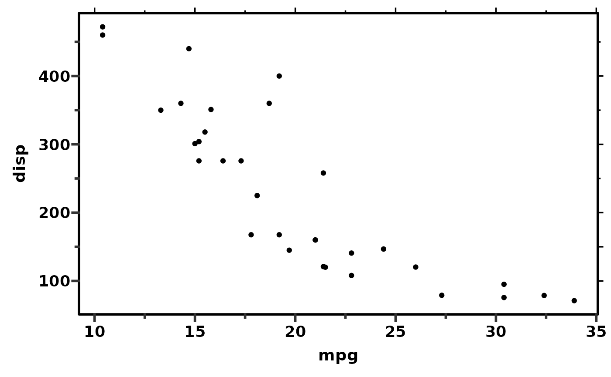
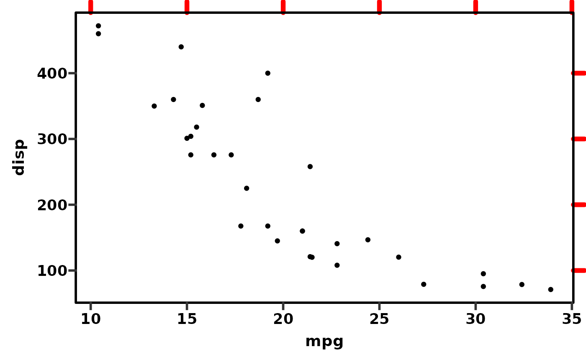
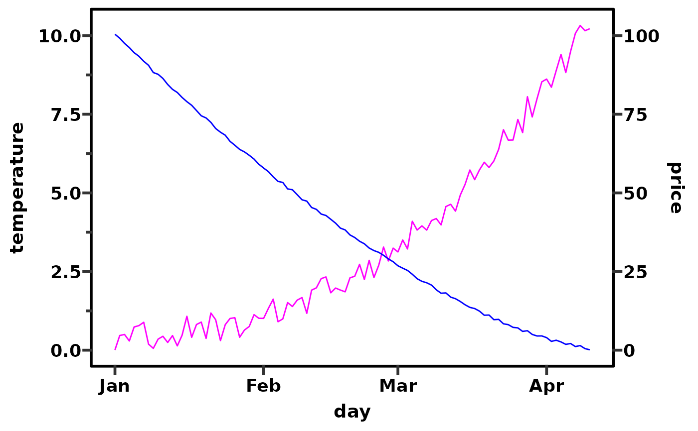

annotation_ticks.RdThis is an annotation function to add tick marks (major, minor, or both) to
a ggplot. Clipping must be turned off if the ticks are to appear outside the
plotting area, for example with: coord_cartesian(clip = "off").
annotation_ticks( sides = "b", type = "both", outside = FALSE, tick.length = unit(4.8, "pt"), minor.length = unit(2.4, "pt"), size = 0.6, colour = "black", color = NULL, linetype = 1, lineend = "butt", alpha = 1, data = data.frame(x = NA) )
| sides |
|
|---|---|
| type |
|
| outside |
|
| tick.length | a |
| minor.length | a |
| size |
|
| colour, color |
|
| linetype |
|
| lineend |
|
| alpha |
|
| data |
|
The code is a slightly modified version of the answer to this
Stack Overflow question,
which is itself a refactored version of this
annotation_ticks()
function.
## Generally it is better to use the guide_prism_minor function. ## However annotation_ticks is useful in a few specific situations. library(ggplot2) ## easily put ticks without labels around a plot with a border ggplot(mtcars, aes(x = mpg, y = disp)) + geom_point() + theme_prism(border = TRUE) + coord_cartesian(clip = "off") + annotation_ticks(sides = "tr", type = "major", outside = TRUE) + theme(plot.margin = unit(c(4, 4, 4, 4), "mm"))# the same but with minor ticks as well ggplot(mtcars, aes(x = mpg, y = disp)) + geom_point() + scale_x_continuous(guide = "prism_minor") + scale_y_continuous(guide = "prism_minor") + theme_prism(border = TRUE) + coord_cartesian(clip = "off") + annotation_ticks(sides = "tr", type = "both", outside = TRUE) + theme(plot.margin = unit(c(4, 4, 4, 4), "mm"))# you can adjust the appearance of annotation_ticks ggplot(mtcars, aes(x = mpg, y = disp)) + geom_point() + theme_prism(border = TRUE) + coord_cartesian(clip = "off") + annotation_ticks( sides = "tr", type = "major", outside = TRUE, tick.length = unit(10, "pt"), colour = "red", size = 2, linetype = "dashed", lineend = "round" ) + theme(plot.margin = unit(c(4, 4, 4, 4), "mm"))## Unfortunately, due to the way they work, secondary axes don't always play ## well with the minor tick axes guides in this package. ## So we can use annotation_ticks instead. sample.data <- data.frame( day = as.Date("2019-01-01") + 0:99, temperature = runif(100) + seq(1, 100)^2.5 / 10000, price = runif(100) + seq(100, 1)^1.5 / 10 ) # sample graph with secondary axis ggplot(sample.data, aes(x = day)) + geom_line(aes(y = temperature), colour = "magenta") + geom_line(aes(y = price / 10), colour = "blue") + scale_y_continuous(sec.axis = sec_axis(~. * 10, name = "price")) + theme_prism(border = TRUE) + coord_cartesian(clip = "off")# guide_prism_minor only works with the main axis in this case ggplot(sample.data, aes(x = day)) + geom_line(aes(y = temperature), colour = "magenta") + geom_line(aes(y = price / 10), colour = "blue") + scale_y_continuous( sec.axis = sec_axis(~. * 10, name = "price"), guide = "prism_minor" ) + theme_prism(border = TRUE) + coord_cartesian(clip = "off")# we use annotation_ticks to draw the minor ticks on the secondary axis ggplot(sample.data, aes(x = day)) + geom_line(aes(y = temperature), colour = "magenta") + geom_line(aes(y = price / 10), colour = "blue") + scale_y_continuous( sec.axis = sec_axis(~. * 10, name = "price"), guide = "prism_minor" ) + theme_prism(border = TRUE) + coord_cartesian(clip = "off") + annotation_ticks(sides = "r", type = "minor", outside = TRUE)